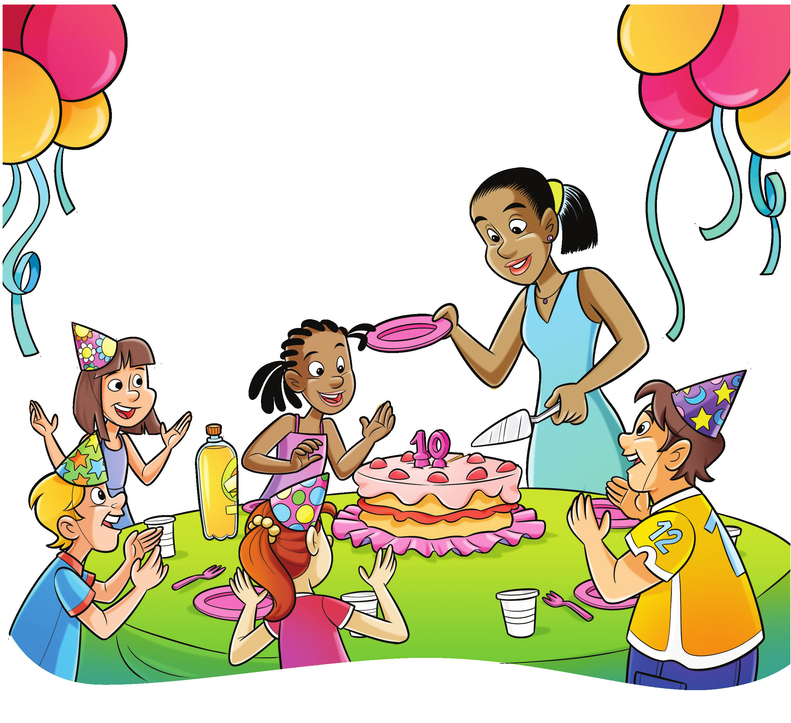
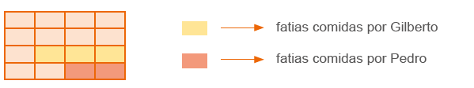
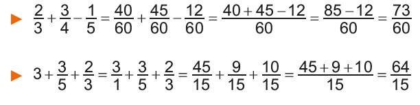
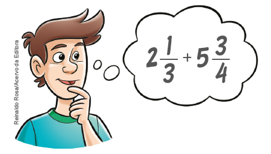
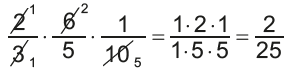
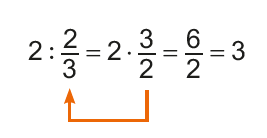
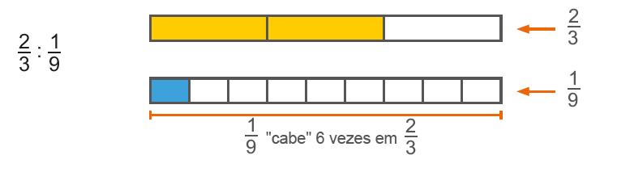
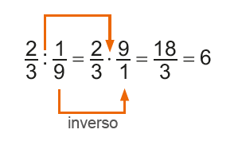
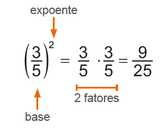

177
CAPÍTULO 2 - Operações com frações
Adição e subtração envolvendo frações
Situação 1
Marina comemorou o seu 10.º aniversário com uma festa. Depois de cantar “Parabéns para você”, a mãe de Marina cortou o bolo em 16 fatias iguais e as distribuiu entre os convidados. Ana comeu 4 fatias; Gilberto 3; Lúcia 1; e Pedro 2.
Representando a quantidade de fatias do bolo que cada um comeu, temos que:
► Ana comeu do bolo;
► Gilberto comeu do bolo;
► Lúcia comeu do bolo;
► Pedro comeu do bolo.

178
Qual é a fração que representa a parte do bolo que os meninos comeram juntos?
Para encontrar a resposta dessa pergunta, vamos utilizar um desenho auxiliar representando a situação.
O retângulo abaixo representa o bolo dividido em 16 fatias iguais. Logo, cada fatia corresponde a do bolo.
Pedro comeu 2 fatias e Gilberto, 3 fatias. Então, das 16 fatias do bolo, os meninos comeram 5.
Podemos representar essa situação por meio da adição de frações. Observe: 2


1. Agora, troque ideias com um colega e resolvam, em seus cadernos, as seguintes questões, utilizando a adição de frações.
a) Qual é a fração que representa a parte do bolo que as meninas comeram juntas?
b) Que fração representa a quantidade total de bolo comido por Pedro, Gilberto, Lúcia e Eloísa?
c) As crianças comeram mais da metade do bolo ou menos? Justifique.
Depois que as crianças comeram o bolo, a mãe de Marina guardou-o na geladeira. Que fração representa a quantidade que sobrou do bolo?
Como o bolo foi dividido em 16 fatias e as crianças comeram 10 fatias ao todo, sobraram 6 fatias.
Podemos representar essa situação por meio da subtração de frações.
Como o bolo inteiro equivale a e as crianças comeram , temos: 16

179
2. Agora, resolvam em seus cadernos, as questões a seguir.
a) Que fração representa a quantidade de fatias que Pedro comeu a mais que Lúcia?
b) Que fração representa a diferença entre a quantidade total de fatias que os meninos comeram e a quantidade total de fatias comidas pelas meninas?
Na adição e subtração de frações com o mesmo denominador, conservamos o denominador e adicionamos ou subtraímos o numerador.
Situação 2
Para realizar um trabalho escolar, Marcela e Bruna deverão entrevistar todos os professores da escola. Marcela já entrevistou dos professores e Bruna entrevistou deles. Que fração representa a quantidade total de professores que elas entrevistaram?

Para resolver essa situação, é preciso adicionar as duas frações, que têm denominadores diferentes. Para isso, devemos encontrar frações equivalentes às frações dadas, de modo que elas apresentem o mesmo denominador. Observe:
![Três barras na horizontal de mesmo tamanho. Duas à esquerda e uma à direita. As da esquerda estão um embaixo da outra. A de cima está dividida em cinco retângulos. Os dois primeiros são azuis-claros. O terceiro é azul escuro e os outros dois brancos. Abaixo da barra, nos retângulos azuis, a fração 3/5. A barra abaixo, está dividida em 10 quadrados. Os quatro primeiros são azuis-claros. O quinto e sexto, azuis-escuros. Os últimos cinco são brancos. Abaixo da barra, na região, dos quadrados azuis, a fração 6/10. Entre as duas barras, um tracejado inicia e termina, na região com as cores azuis, sendo os 3/5 do mesmo tamanho que os 6/10. Na barra de cima, os dois primeiros retângulos na cor azul clara têm o mesmo tamanho dos quatro quadrados azuis-claros, da barra de baixo. Assim como, o terceiro retângulo azul escuro da barra de cima tem o mesmo tamanho dos quadrados azuis-escuros da segunda barra. Na terceira barra à direita, ela está dividida em dez quadrados. Os primeiros quatro quadrados estão em azul claro, o quinto e o sexto são azuis-escuros. O sétimo, oitavo e nono estão nas cores laranja e o décimo quadrado é branco. Acima dos quadrados azuis, a fração 6/10. Acima dos quadrados em laranja, a fração 3/10.](../../resources/images/fraqequi.PNG)
Marcela e Bruna entrevistaram do total de professores.
180
Marcela entrevistou mais professores que Bruna. Qual é a fração que representa a quantidade de professores que Marcela entrevistou a mais?
Para saber a fração que representa essa situação podemos realizar uma subtração. Da mesma forma que na adição, para realizar a subtração há a ne-cessidade de encontrar frações equivalentes que apresentem o mesmo denominador. Observe:

Logo, Marcela entrevistou a mais da quantidade total de professores que Bruna.
Na adição e subtração de frações com denominadores diferentes, devemos encontrar frações equivalentes às frações dadas, ou seja, que apresentem o mesmo denominador, para então adicionarmos ou subtrairmos as frações.
Outros exemplos:
ENCONTRE SOLUÇÕES
1. Roberto estava com o tanque do carro vazio. Ao parar no posto, ele abasteceu o carro, que é bicombustível, com de etanol e de gasolina. Em seu caderno, escreva a fração que representa:
a) a quantidade a mais de etanol que Roberto colocou no tanque, se comparado à quantidade de gasolina;
b) a quantidade total de combustível colocado no tanque do carro;
c) a quantidade de combustível que faltou para completar o tanque.
2. Qual é a fração que representa a parte vermelha da figura abaixo?

181
3. Em seu caderno, calcule as operações a seguir, simplificando o resultado quando for possível.
a) + +
b) + -
c) + + -
d) - +
e) + + + -
f) - + + -
4. Observe as figuras a seguir.


a) Em seu caderno, represente, na forma de número fracionário, a parte colorida de cada figura.
b) Usando as frações que você encontrou da parte colorida de cada desenho, represente as expressões e calcule:
► A + B - C
► D - E
c) Em seu caderno, represente os resultados das expressões por meio de desenhos.
5. Em seu caderno, calcule as operações, simplificando o resultado quando for possível.
a) +
b) -
c) + +
d) - -
e) + -
f) 7 - + - +
6. Numa maratona, Ademar percorreu do percurso na primeira meia hora e na meia hora seguinte.

a) Ademar percorreu a maior distância na primeira ou na segunda meia hora?
b) Que fração representa o total percorrido por Ademar durante a primeira hora de corrida?
c) Nesse momento, que fração da maratona ainda restava para Ademar percorrer?
182
7. Elvira recebeu seus netos Eduardo, Leonardo e Gabriel, para passarem uma tarde em sua casa. Depois de brincarem no quintal, os meninos foram para a cozinha lanchar. Elvira fez biscoitos para eles. Eduardo comeu dois quartos dos biscoitos, e Leonardo um doze avos. Sendo assim, responda:
a) Que fração representa a quantidade de biscoitos que sobrou para Gabriel?
b) Qual dos netos comeu mais biscoitos?
c) Que fração representa a diferença entre a quantidade de biscoitos que Leonardo comeu e a quantidade comida por Gabriel?
8. Foi feita uma pesquisa com os alunos do 6.º ano de uma escola sobre o gênero de filme preferido. Cada aluno poderia escolher somente um gênero: animação, aventura, comédia ou suspense. Os resultados foram organizados no gráfico de setores abaixo. Analise- o e responda às questões.
Gênero preferido

a) De acordo com o gráfico, escreva a fração que corresponde à quantidade de alunos por gênero de filme.
b) Qual é a fração que representa a quantidade de alunos que preferem animação ou comédia?
c) A fração que corresponde à quantidade de alunos que preferem comédia é equivalente à fração que corresponde à quantidade de alunos que preferem outro gênero. Qual gênero é esse?
d) Qual fração representa a quantidade total de alunos que preferem animação, aventura e suspense?
e) Qual fração representa a diferença entre os gêneros animação e suspense?
9. As etapas para a construção de uma casa são três: projetos, execução dos projetos e acabamento. Do tempo gasto para a construção, foi empregado para fazer os projetos e representam o tempo gasto para executá-los. Qual fração do tempo gasto na construção representa o tempo empregado para fazer o acabamento dessa casa?
10. Joana propôs um desafio para Lucas: solicitou que ele resolvesse a seguinte operação:
Observe como Lucas resolveu:

► Agora é com você! Resolva, em seu caderno, as operações a seguir.
a) 3. +
b) 4. - 1.
183
11. Em seu caderno, resolva as expressões, simplificando o resultado quando possível.
a) - ( + )
b) ( - ) + ( - )
c) 3 - ( + )
d) - ( - ) -
12. O salário de Joana é de 870 reais. No mês passado, ela gastou com o aluguel, com alimentação e com outras despesas. Quantos reais sobraram do salário de Joana?
13. Marina está lendo um livro de aventuras. No primeiro dia, ela leu do livro. No segundo dia, ela leu do livro. Qual é a fração que representa a quantidade de páginas que ainda faltam para Marina ler?
14. Durante o almoço tomei a metade da garrafa de suco e, no jantar, tomei a metade do que havia restado. Qual é a fração que representada a quantidade de suco que ainda resta na garrafa?
15. Em seu caderno, elabore um problema sobre adição ou subtração de frações. Troque seu caderno com um colega e peça a ele para resolver o problema elaborado por você. Após a resolução, converse com ele sobre a resolução e utilize desenhos caso ache necessário.
16. Observe as imagens das pizzas a seguir. Elas foram cortadas em partes iguais.

► Em seu caderno, elabore um problema sobre adição de frações usando as imagens acima como referência. Em seguida, troque seu caderno com um colega para que ele resolva o problema elaborado por você. Juntos, verifiquem se os problemas resolvidos estão corretos.
17. (OBMEP) Uma turma fez uma eleição para eleger seu representante. Três candidatos concorreram à eleição: João, Rosa e Marcos. João teve dos votos, Rosa teve > dos votos. Quem ganhou a eleição?

18. (OBMEP) A capacidade do tanque de gasolina do carro de João é de 50 litros. As figuras mostram o medidor de gasolina do carro no momento de partida e no momento de chegada de uma viagem feita por João. Quantos litros de gasolina João gastou nesta viagem?
a) 10
b) 15
c) 18
d) 25
c) 30

184
Multiplicação de um número natural por uma fração
Neste ano, o projeto da escola onde Paulo estuda é sobre a conscientização da importância da reciclagem. Foi feita, então, uma campanha para arrecadar o maior número possível de latas de refrigerante e sucos vazias. Para incentivar a campanha, a escola premiará a turma que arrecadar mais latas. O 6.º ano A, turma do Paulo, ficou em 2º lugar por ter arrecadado do total. O 6º ano C foi o grande campeão, arrecadando o dobro da quantidade arrecadada pela turma de Paulo.

Qual é a fração que representa a quantidade arrecadada pelo 6º ano C?
Vamos verificar a solução dessa situação!
Sabemos que, para determinar o dobro de uma quantidade, podemos multiplicá-la por 2, ou seja, 2 ∙ . Como uma das ideias da multiplicação é a adição de parcelas iguais, temos:
Inforgráfico:

Observe outra maneira de efetuar a multiplicação: 2. = . = =
Logo, o 6.º ano C coletou do total de latas arrecadadas pela escola.
Na multiplicação de um número natural por uma fração, multiplicamos o número natural pelo numerador da fração, conservando o mesmo denominador.
185
Multiplicação entre frações
O 6º ano B foi a turma que menos arrecadou latinhas. A quantidade arrecadada foi da quantidade do 6º ano C. Qual é a fração que representa a quantidade de latas arrecadadas pelo 6.º ano B?
Vamos verificar a solução dessa situação!
Representando na forma de desenho, temos:
Esse desenho representa 7 das latas.

Esse desenho representa das latas.
A parte hachurada representa de .
Analisando toda a figura, a parte hachurada representa de toda a figura. Calcular de é o mesmo que:
. = = =
Logo, o 6º ano B arrecadou do total de latas.
Na multiplicação entre duas ou mais frações, multiplicamos o numerador de uma fração pelo numerador da outra, e o denominador de uma pelo denominador da outra.
Técnica do cancelamento
Observe as seguintes multiplicações:
. = =
Neste caso, a multiplicação foi efetuada e, depois, o produto foi simplificado.
Usando a técnica do cancelamento.
Nessa multiplicação, foi usada a técnica do cancelamento. O numerador 2 e o denominador 4 são múltiplos de 2. Foram, então, simplificados por 2 antes de a multiplicação ser efetuada. Assim, o resultado já fica simplificado.
A técnica do cancelamento consiste em simplificar numeradores e denominadores que são múltiplos de um mesmo número, quando possível, antes de efetuar a multiplicação.
Outro exemplo:
186
ENCONTRE SOLUÇÕES
1. Luciana adora cozinhar. Para receber suas amigas, ela pensou em fazer uma torta salgada. Veja a receita a seguir.
Torta salgada
Ingredientes
3 ovos
xícaras de farinha
xícara de óleo
xícara de leite
1 colher de chá de fermento
Sal a gosto
150 gramas de presunto picado
150 gramas de queijo picado
2 tomates temperados com cheiro verde, sal e óleo.
Modo de fazer
- Bata no liquidificador o leite, a farinha, o óleo, os ovos e o fermento.
- Deposite este creme em um tigela e misture os demais ingredientes.
- Adicione tudo em um fôrma. Leve ao forno por, pelo menos, 40 min, a uma temperatura de 180ºC.
► Uma receita rende o suficiente para 4 pessoas. Como Luciana receberá 12 amigas, quantas receitas ela deverá fazer? Em seu caderno, escreva a quantidade de ingredientes que ela utilizará para fazer a torta.
2. Em seu caderno, efetue as multiplicações, simplificando-as sempre que possível.
a) . 5
b) . 18
c) . 13
d) . 5
e) 12 .
f) 11 .
g) 8 .
h) 124 .
3. No 6.º ano A, dos alunos são meninos. Desses meninos, joga futebol. Qual é a fração que representa a quantidade de alunos do 6.º ano A que jogam futebol?
4. Durante o mês de dezembro, uma concessionária vendeu 125 carros. Destes, tinham ar-condicionado. Quantos carros com ar-condicionado foram vendidos nesse mês?
5. Gabriela e Bruna resolveram colaborar com a associação de idosos no bairro onde moram. Cada uma recebeu um bloco contendo 20 rifas para vender durante a semana. Gabriela vendeu do seu bloco e Bruna . Quantas rifas Gabriela e Bruna venderam juntas?
6. Efetue as multiplicações, simplificando- as sempre que possível.
a) .
b) .
c) .
d) .
e) . .
f) . .
g) . .
h) . 6 . .
7. Em uma longa viagem, foram percorridos utilizando-se dois tipos de veículos auto desse percurso foi feito de ônibus, qual é a fração da viagem que representa o trecho feito de automóvel?
187
8. Em seu caderno, calcule e, sempre que possível, simplifique o resultado.
a) + .
b) . + -
c) . ( - ) +
d) + 3 . ( - )
9. Um avião com capacidade para 365 passageiros está com de seus lugares vendidos. Quantos lugares ainda restam?
10. Na eleição para prefeito de uma cidade, verificou-se que da população votou no candidato A, da população votou no candidato B e 1 500 pessoas votaram em branco. Quantos votos o candidato A obteve? E o candidato B?
Números inversos

Vamos entender o que a menina da charge acima disse. Observe:
► 2 ∙ = . = = 1
► 2 é inverso de e vice-versa.
► . 5 = = 1
► é inverso de 5 e vice-versa.
► . = = 1
► é inverso de e vice-versa.
A multiplicação de um número fracionário pelo seu inverso sempre resulta em 1.
O número zero não possui inverso.
188
Divisão envolvendo frações
Situação 1
A turma de Carlos se reuniu para brincar. Sua mãe, então, resolveu comprar 2 garrafas de suco para servi-los. Estimando que cada um tomará da garrafa e não sobrará nada nesse recipiente, quantas pessoas há nessa turma?
Se verificarmos quantas vezes cabe em 2, descobriremos a quantidade de pessoas.
Representando a situação na forma de desenho, temos:
![Quatro barras na horizontal, duas à esquerda, uma embaixo da outra. Duas à direita, uma embaixo da outra. Nas da esquerda. A de cima está em verde. Abaixo, a barra está dividida em três partes, as duas primeiras, na cor verde. A última parte em branco. Abaixo da parte em verde, a fração 2/3. Abaixo da parte branca, 1/3. Nas barras à direta. A de cima é verde. A debaixo está dividida em 3 partes. A primeira é branca e as outras duas em verde. Abaixo da parte branca, a fração 1/3. Abaixo, da parte verde, 2/3.](../../resources/images/pg190.PNG)
Assim, 2 : = 3
Note que o quociente pode ser encontrado multiplicando-se o primeiro número pelo inverso do segundo.
Perceba que obtivemos o mesmo resultado ao multiplicar 2 pelo inverso de .
Logo, são 3 pessoas que fazem parte da turma.
Situação 2
Para o lanche, a mãe de Carlos comprou de um bolo de chocolate para repartir, igualmente, entre todos eles de modo que não sobrasse nada. Qual é a fração que representa a parte que cada um comeu do bolo inteiro?
189
Representando a situação por meio de desenhos, temos:
temos![Três barras na horizontal, uma abaixo da outra. A primeira está dividida em duas partes na horizontal. A parte de cima é branca, a de baixo é amarela. À direita da barra, a fração ½. A segunda barra, está dividida em duas partes, na horizontal. A de cima está em branco. A de baixo, dividida em três partes iguais. À direita da barra, a fração ½ dividido 3. A terceira barra está dividida em duas partes, na horizontal. A de cima está em branco, dividida em 3 com linhas tracejadas. Na parte debaixo, a primeira e a segunda são amarelas. A terceira amarela com linhas na diagonal. À direita da barra, a fração 1/6.](../../resources/images/191barras.PNG)
Logo, temos que:
: 3 =
Vamos agora multiplicar pelo inverso de 3.
: 3 = . =
Perceba que tivemos o mesmo resultado ao multiplicar pelo inverso de 3.
Na divisão de duas frações, multiplicamos a primeira fração pelo inverso da segunda fração.
Observe, agora, a seguinte situação:
Logo, : = 6.
Podemos efetuar essa operação da seguinte maneira:
190
Uma fração também representa uma divisão entre o numerador e o denominador. Observe algumas formas de representar a divisão:
► = 15 : 5
► 7 : 3 =
► / = :
ENCONTRE SOLUÇÕES
1. Em seu caderno, determine o inverso de cada número abaixo.
a)
b)
c)
d)
e) 9
f) 1
2. Qual é o número que, multiplicado por , resulta em 1?
3. Em seu caderno, calcule as seguintes divisões, simplificando o resultado quando possível.
a) 3:
b) 12 :
c) 5 :
d) 1 :
e) 0 :
f) : 8
g) : 15
h) : 1
4. Três pessoas comeram a metade de um melão. Qual é a fração que representa a quantidade que cada um comeu do melão?
5. Márcia fez 8 litros de suco de laranja e pretende colocá-los em garrafas de de litro. De quantas garrafas ela precisará?
6. Alguns amigos resolveram viajar pelo Brasil. Viajando de carro, eles já percorreram do trajeto total e, para não ficar cansativo, cada um dirigiu um pouco. Sabendo que cada um dirigiu do percurso, quantos amigos estão viajando?
7. Em seu caderno, calcule as divisões, simplificando o resultado sempre que possível.
a) :
b) :
c) :
d) :
e) :
f) :
g) :
h) :
8. Em seu caderno, calcule e, sempre que possível, simplifique as expressões numéricas.
a) + :
b) 1 + : -
c) (7 - ) : ( + )
d) . + :
e) ( + ) :
f) 3 . [ : ( + )]
9. Ana Carla comprou uma garrafa de 20 L de água. Ela irá encher garrafinhas de água que cabem de litro. Quantas garrafinhas de água Ana Carla conseguirá encher?
10. Lucas comprou 2 quilogramas de açúcar e deverá colocar em potes que cabem de quilograma cada um. Quantos potes de açúcar ele conseguirá encher?
191
Potenciação de frações
Lembrando-nos da potenciação com números naturais, temos:
34
34
Para calcular uma potência com números fracionários, usaremos o mesmo raciocínio. Veja alguns exemplos.
\(\left(\dfrac{3}{5}\right)^{2}\)
\(\left(\dfrac{1}{2}\right)^{5}\)
\(\left(\dfrac{1}{2}\right)^{5} = \dfrac{1}{2} \cdot \dfrac{1}{2} \cdot \dfrac{1}{2} \cdot \dfrac{1}{2} \cdot \dfrac{1}{2} = \dfrac{1}{32} \)
\(\left(\dfrac{2}{7}\right)^{3}\)
\(\left(\dfrac{2}{7}\right)^{3} = \dfrac{2}{7} \cdot \dfrac{2}{7} \cdot \dfrac{2}{7} = \dfrac{8}{343} \)
Lembrando-nos de situações em que o expoente é 1 ou 0, temos: 6 1 6
()1 =
()0 = 1
ENCONTRE SOLUÇÕES
1. Calcule no caderno:
a) ()3
b) ()3
c) ()1
d) ()5
e) ()0
f) (
2. Qual é o quadrado de ?
3. Qual é o cubo de ?
4. Qual é o valor de elevado à quinta potência?
5. Qual é o quadrado do inverso de ?
6. Em seu caderno, calcule as seguintes expressões, simplificando o resultado sempre que possível.
a) + ()3 :
b) ( : )2 .
c) ( - ) + ( - )2
d) [()2 + ()3] : ( )
192
Raiz quadrada
Anteriormente, estudamos como calcular a raiz quadrada exata de um número natural.
√4 = 2 pois 2² = 4
√25 = 5 pois 5² = 25
Vejamos agora como calcular a raiz quadrada de um número fracionário.
► √ = , pois ()2 =
► √
► √ = , pois ()2 =
Para calcularmos a raiz quadrada de um número fracionário, encontramos a raiz quadrada do numerador e a raiz quadrada do denominador.
ENCONTRE SOLUÇÕES
1. Calcule no caderno:
a) √
b) √
c) √
d) √
e) √
f) √
g) √1
h) √5
i) √1
j) √6
2. Resolva as expressões abaixo em seu caderno.
a) ()2 √
b) ( + )2 -
√
c) ( )2 + √
d) ( )4 :
e) √